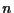

Next: Mutation rate
Up: M
Previous: Multirecombination
Mutation/
mutation operator
variation operator, which changes the information contained in the
genome of a parent according to a given probability distribution.
In the case of bit strings, this is realized by random negation
(bit mutation,
mutation rate)
of single bits. For real-valued object parameters a random number
from a suitable distribution is added
(mutation strength)
and for mutative self-adaptation strategies (ES/EP)
the strategy parameter is multiplied with a random number
(learning parameter).
In real-valued -dimensional search spaces, isotropic vs. non-isotropic and correlated vs. uncorrelated mutations can be
distinguished, which are often generated from a normal distribution.
In GP, mutation is usually achieved by the deletion of a sub-tree, the
addition of a randomly generated sub-tree or by the exchange of a
random block (node).
If necessary, the individual has to be repaired after mutation in
order to obtain a consistent
program.
Hans-Georg Beyer
2002-02-25